并发控制：互斥
课程：2026 春季学期《操作系统原理》
讲师：蒋炎岩（jyy）
官方课程主页：https://jyywiki.cn/OS/2026/
官方讲义：https://jyywiki.cn/OS/2026/lect14.md
视频来源：Bilibili BV1hNdhB1Efe
版权说明：课程讲义与幻灯片归蒋炎岩所有，采用 Creative Commons BY-NC 4.0 许可；本电子书是对课堂讲授的书面化重构，保留出处与许可说明。
导语：把并发重新装回可控的盒子里
(参考时间: 00:00)
上一讲已经证明：共享内存并发会打破确定性、顺序执行和指令顺序三个直觉。
这一讲不再继续“玩火”，而是尝试把并发限制在明确边界内：
make_it_work {
sum++;
}
如果一段代码在任何执行交错下都表现为“不与其他同类代码块并发执行”，就能把这段临界区退化成顺序代码。
这个机制称为：
互斥（mutual exclusion / mutex）
flowchart LR
A["共享内存并发"] --> B["非确定性与数据竞争"]
B --> C["找出必须串行的代码"]
C --> D["互斥：同一时间只允许一个线程"]
D --> E["临界区重新获得顺序语义"]
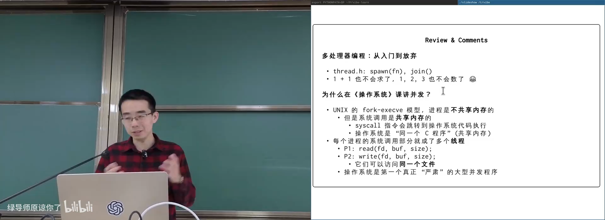
📷 操作系统系统调用本身就是最早的共享内存并发程序
回到原视频 (00:02:10)
1. 为什么操作系统必须处理并发
1.1 fork 不共享内存，系统调用却共享内核
(参考时间: 00:01)
早期 UNIX 中：
- 一个进程执行
fork后，父子进程是独立地址空间； execve也不默认共享用户态内存；- 可是系统调用会从用户态跳入同一份内核代码。
因此：
P1: read(fd, buf, size);
P2: write(fd, buf, size);
两个进程在内核中可以被视为两个线程：
- 用户态地址空间不同；
- 内核对象与内核数据结构相同；
- 中断或另一个 CPU 可能随时打断当前内核路径。
所以操作系统是第一个真正严肃的大型并发程序，很多早期并发研究也来自操作系统。
flowchart TD
P1["进程 P1"] -->|"syscall"| K["共享内核状态"]
P2["进程 P2"] -->|"syscall"| K
I["中断"] --> K
C["其他 CPU"] --> K
K --> D["同一文件 / 队列 / 页面 / 分配器"]
D --> R["并发访问与一致性风险"]
1.2 “make it work” 的历史方案
(参考时间: 00:04)
我们希望有一个语言或系统机制，让一段代码：
make_it_work {
sum++;
update_tree();
append_log();
}
表现为统一的原子操作：
- 要么全部完成；
- 要么像从未执行；
- 中间状态不对其他线程或事务可见。
这接近 Transactional Memory。Intel 曾通过 xbegin / xend 提供 TSX，ARM 也有过类似事务扩展。但这类指令影响几乎全部指令语义，实现和维护复杂度极高，并曾牵涉安全问题。
flowchart TD
A["事务开始"] --> B["执行多条读写"]
B --> C{"冲突或失败？"}
C -- "否" --> D["一次性提交全部写入"]
C -- "是" --> E["回滚并重试 / 退避"]
D --> F["其他线程看到完整结果"]
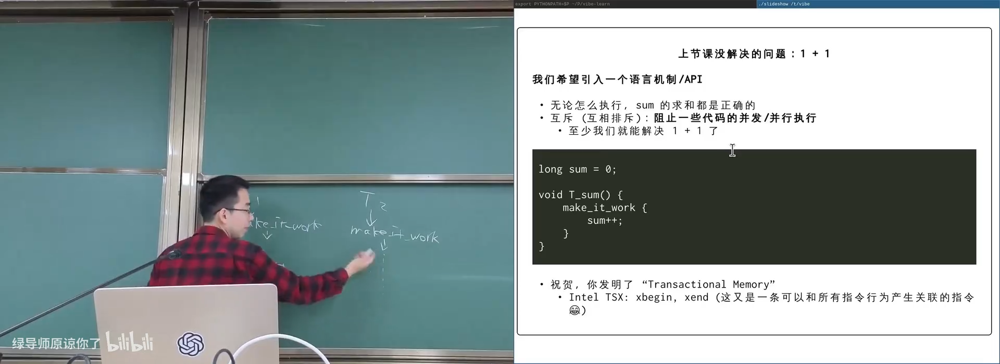
📷 Transactional Memory 的原子提交与回滚语义
回到原视频 (00:04:30)
2. 最简单的起点：单处理器关闭中断
2.1 内核中的 stop the world
(参考时间: 00:06)
在单处理器内核中，可以在很短的关键区内关闭中断：
disable_interrupt();
sum++;
enable_interrupt();
关闭中断后：
- CPU 不再接收其他设备中断；
- 不会发生中断驱动的线程切换；
- 当前处理器上的执行暂时变成确定顺序。
但这是操作系统内核的能力，而且必须很短。如果关闭中断后进入死循环，整台机器会失去响应。
flowchart TD
A["进入关键区"] --> B["关闭中断"]
B --> C["执行不可被打断的代码"]
C --> D["打开中断"]
D --> E["恢复调度与外部事件"]
C --> F{"代码死循环？"}
F -- "是" --> G["系统失去响应"]
flowchart LR
U["用户态程序"] --> A["尝试执行 cli / MSR 中断控制"]
A --> B["特权级检查失败"]
B --> C["Illegal instruction / Segfault / Protection fault"]
C --> D["用户程序无权关闭中断"]
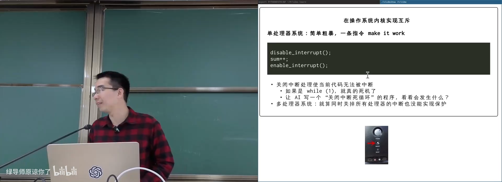
📷 内核通过关闭中断保护短临界区
回到原视频 (00:06:50)
2.2 用户态执行特权指令会失败
(参考时间: 00:09)
在用户态尝试关闭中断：
cli
或通过 MSR 清除中断位，会被处理器拒绝。不同平台分别可能表现为：
Illegal instruction
SIGSEGV
Protection fault
这体现了操作系统与应用程序的权限边界：共享资源保护机制可以借助硬件特权，但不能让任意用户代码破坏整个系统。
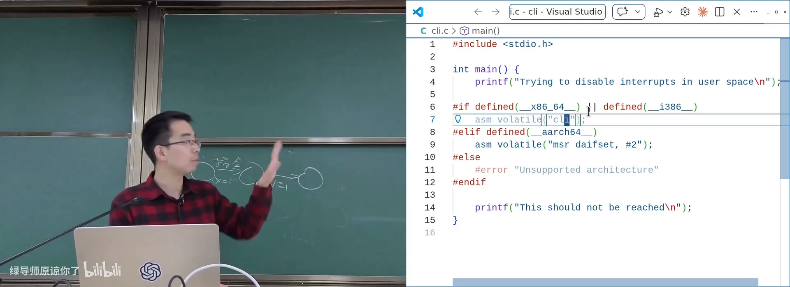
📷 用户态关闭中断触发非法指令或保护错误
回到原视频 (00:09:20)
3. 互斥 API
3.1 lock / unlock
(参考时间: 00:10)
标准形式：
mutex_lock(&lock);
sum++;
mutex_unlock(&lock);
语义是：
lock成功返回后，当前线程进入临界区；- 同一把锁保护的临界区不会同时执行；
unlock释放锁，并保证临界区内的写在后续获取同一把锁的线程中可见；- 其他线程若有冲突访问，也必须使用同一把锁。
sequenceDiagram
participant T1 as Thread 1
participant L as Mutex
participant T2 as Thread 2
T1->>L: lock
L-->>T1: acquired
T2->>L: lock
Note over T2,L: 等待
T1->>T1: critical section
T1->>L: unlock
L-->>T2: acquired
T2->>T2: critical section
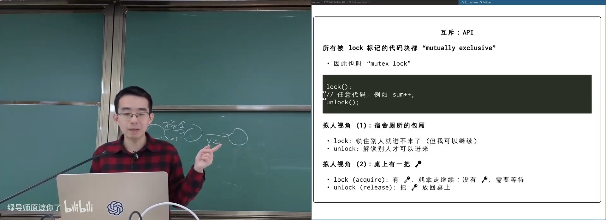
📷 互斥把并发执行局部退化为顺序执行
回到原视频 (00:11:20)
3.2 两种拟人视角
(参考时间: 00:13)
房间视角：
lock：进入只能容纳一人的房间并锁门；unlock：离开房间，其他人可以进入。
钥匙视角：
- 桌上只有一把钥匙；
lock/acquire：拿走钥匙才能继续；unlock/release：把钥匙放回。
flowchart TD
A["线程到达 lock"] --> B{"钥匙在桌上？"}
B -- "是" --> C["拿走钥匙，进入临界区"]
B -- "否" --> D["等待钥匙回来"]
C --> E["执行共享内存操作"]
E --> F["unlock：放回钥匙"]
F --> B
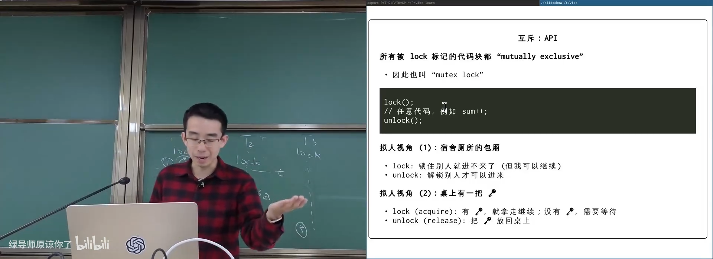
📷 用宿舍单人间与钥匙理解互斥锁
回到原视频 (00:13:40)
3.3 Acquire / Release 的内存语义
(参考时间: 00:14)
锁不仅是“只允许一个线程进入”，它还必须提供可见性保证：
- release 之前的写，在之后的 acquire 中可见；
- acquire 不能被重排到临界区读之后；
- release 不能被重排到临界区写之前；
- 这建立了线程之间的同步关系。
flowchart LR
A["T1 critical writes"] --> B["T1 release"]
B -->|"synchronizes-with"| C["T2 acquire"]
C --> D["T2 critical reads"]
D --> E["T2 能看到 T1 的写入"]
3.4 多把锁
(参考时间: 00:16)
不同共享对象可以使用不同锁：
mutex_t lock_x = MUTEX_INIT();
mutex_t lock_y = MUTEX_INIT();
mutex_lock(&lock_x);
x++;
mutex_unlock(&lock_x);
mutex_lock(&lock_y);
y++;
mutex_unlock(&lock_y);
只要访问同一对象的代码都使用同一把锁，x 与 y 就可以独立并发。
flowchart TD
A["共享变量 x"] --> LA["锁 A 保护"]
B["共享变量 y"] --> LB["锁 B 保护"]
LA --> C["x 的临界区互相排斥"]
LB --> D["y 的临界区互相排斥"]
C --> E["x 与 y 之间仍可并发"]
D --> E
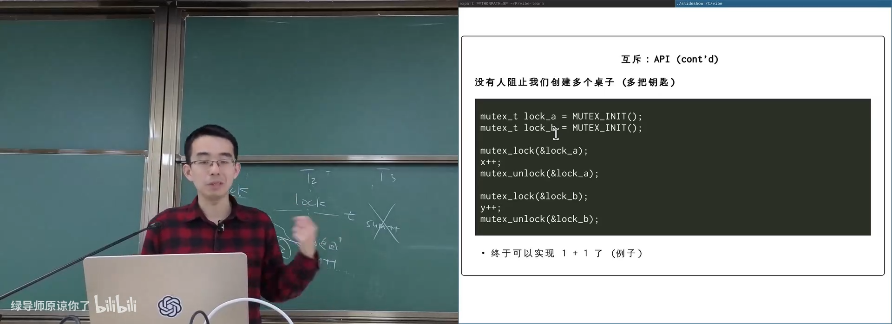
📷 用不同锁保护彼此独立的共享数据
回到原视频 (00:16:20)
3.5 用锁正确求和
(参考时间: 00:17)
#define N 1000000
long sum = 0;
mutex_t lock = MUTEX_INIT();
void T_sum(int tid) {
for (int i = 0; i < N / 2; i++) {
mutex_lock(&lock);
for (int j = 0; j < 10; j++) {
sum++;
asm volatile("" ::: "memory");
}
mutex_unlock(&lock);
}
}
编译器屏障防止十条 sum++ 被合并成 sum += 10，使临界区足够长，也便于观察锁是否正确。
flowchart TD
A["T_sum 循环"] --> B["lock"]
B --> C["多次 load / add / store"]
C --> D["unlock"]
D --> E{"还有循环？"}
E -- "是" --> A
E -- "否" --> F["线程结束"]
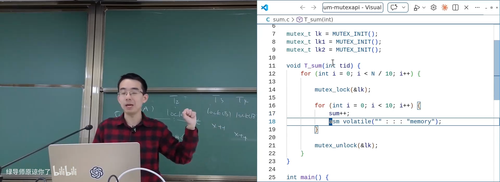
📷 使用互斥锁和多线程求和
回到原视频 (00:18:20)
4. 正确使用锁并不容易
4.1 Stop-the-world 只是正确使用时的抽象
(参考时间: 00:20)
如果所有共享数据都被同一套锁正确保护，就可以把 lock ... unlock 理解为：
stop_the_world();
critical_section();
resume_the_world();
其他线程即使真的在并行，它们的执行效果也可以被理解为前后重排，不会插入当前临界区。
所以使用锁后，程序的局部理解又回到顺序执行：
- 编译器优化假设重新成立；
- 临界区内不会看到并发写入；
- 人类可以用顺序思维处理复杂代码。
flowchart LR
A["并行执行时间线"] --> B["正确 lock / unlock"]
B --> C["冲突临界区被串行化"]
C --> D["可按顺序语义理解"]
D --> E["旧有的编译器与程序直觉恢复"]
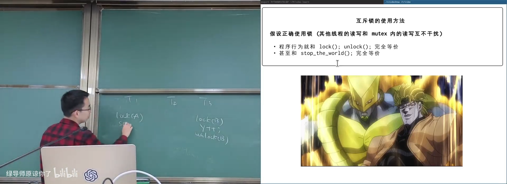
📷 互斥锁可抽象为局部 stop the world
回到原视频 (00:20:30)
4.2 忘解锁、提前返回、用错锁
(参考时间: 00:24)
锁的问题与 malloc / free 相似：
一旦引入显式 acquire / release，程序员就必须在所有路径上维持配对关系。
常见错误：
void f(void) {
lock(&l);
if (error) {
return; /* 漏掉 unlock */
}
unlock(&l);
}
另一种错误是用不同的锁保护同一变量：
T1: lock(&l); sum++; unlock(&l);
T2: lock(&i); sum++; unlock(&i);
两段看似都加锁，但 l 和 i 不是同一个互斥域，保护完全失效。
flowchart TD
A["显式锁协议"] --> B["忘记 lock"]
A --> C["忘记 unlock"]
A --> D["提前 return"]
A --> E["错误锁对象"]
A --> F["锁顺序不一致"]
B --> G["数据竞争"]
C --> H["死锁或永久阻塞"]
D --> H
E --> G
F --> I["死锁"]
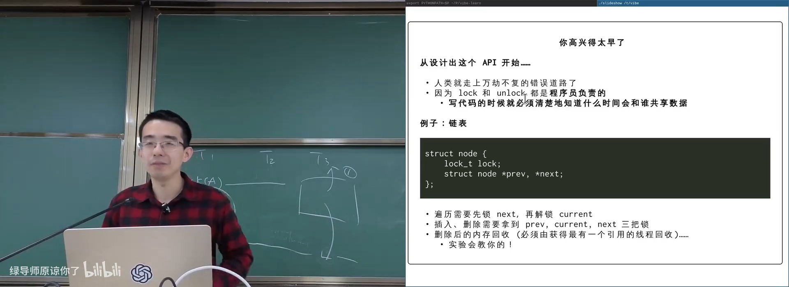
📷 常见锁使用错误：提前返回和锁对象写错
回到原视频 (00:24:40)
4.3 细粒度链表锁非常复杂
(参考时间: 00:25)
双向链表节点可能各自带锁：
struct node {
lock_t lock;
struct node *prev, *next;
};
遍历时必须：
- 持有当前节点锁；
- 获取下一节点锁；
- 确认链接关系；
- 释放当前节点锁；
- 继续向前。
插入和删除需要同时持有：
prev.lock
current.lock
next.lock
删除后还要安全回收内存，不能有线程仍持有指向该节点的引用。
flowchart TD
A["遍历 current"] --> B["获取 next 锁"]
B --> C["确认 current->next 仍指向 next"]
C --> D["释放 current 锁"]
D --> E["继续遍历 next"]
F["删除节点"] --> G["获取 prev / current / next 三把锁"]
G --> H["修改链接"]
H --> I["确认没有残留引用"]
I --> J["安全回收"]
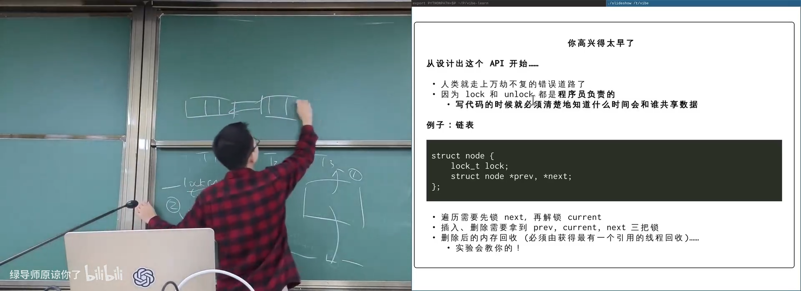
📷 并发链表需要维护跨节点锁协议
回到原视频 (00:25:50)
4.4 一把大锁保平安
(参考时间: 00:28)
课程建议初次实现并发数据结构时，从一把大锁开始：
- 所有共享访问都使用同一把锁；
- 先保证正确性；
- 充分压力测试；
- 只有确认瓶颈后再拆锁。
Linux 从单处理器迁移到 SMP 时，也长期依赖 Big Kernel Lock：
- 一把大锁保证整体一致性；
- 先完成从单核到多核的安全过渡；
- 再逐步拆分关键子系统。
flowchart LR
A["单处理器：关中断"] --> B["多处理器：一把大锁"]
B --> C["正确但扩展性有限"]
C --> D["识别热点路径"]
D --> E["逐步拆成细粒度锁"]
E --> F["压力测试与修复竞态"]
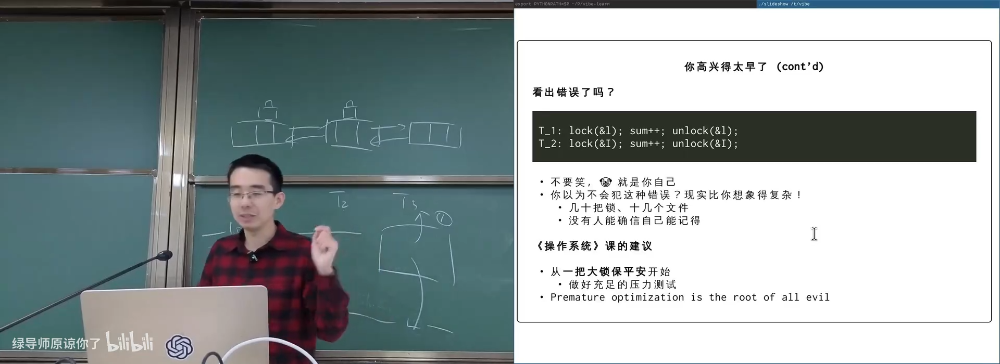
📷 从 Big Kernel Lock 开始逐步拆锁
回到原视频 (00:29:20)
4.5 “都不并发了，为什么还要线程”
(参考时间: 00:32)
Amdahl’s Law：
如果 1/k 的代码必须串行，即使并行部分无限快：
T_∞ ≥ T_1 / k
悲观地看，串行比例会限制最大加速。
更细致的 Gustafson’s Law 强调：
T_p < T_∞ + T_1 / p
只要可并行部分非常大，需要串行的关键区只占很小比例，增加处理器仍然可以获得接近线性的扩展。
flowchart LR
A["任务"] --> B["小部分串行"]
A --> C["大部分可并行"]
B --> D["Amdahl 限制最大加速"]
C --> E["Gustafson：问题随规模增长可保持扩展"]
D --> F["优化串行瓶颈"]
E --> G["扩大并行任务"]
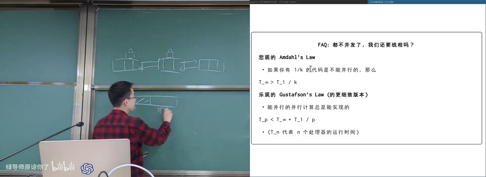
📷 Amdahl 定律与 Gustafson 定律的不同视角
回到原视频 (00:33:30)
4.6 局部性让世界天然可并行
(参考时间: 00:35)
物理世界具有局部性：
- 物体主要影响相邻区域；
- 无法瞬移到宇宙任意位置；
- 大部分计算只需访问本地数据；
- 只有边界需要同步。
典型 embarrassingly parallel 场景：
- 图书馆借书：抢书时同步，读书时独立；
- 分布式数据存储；
- 天气预报与网格模拟；
- 深度神经网络；
- NP-hard 搜索的不同分支；
fork-based DFS。
flowchart TD
A["大任务"] --> B["切成独立块"]
B --> C["每块读取本地数据"]
C --> D["仅边界数据需要锁"]
D --> E["大量计算并行"]
E --> F["汇总结果"]
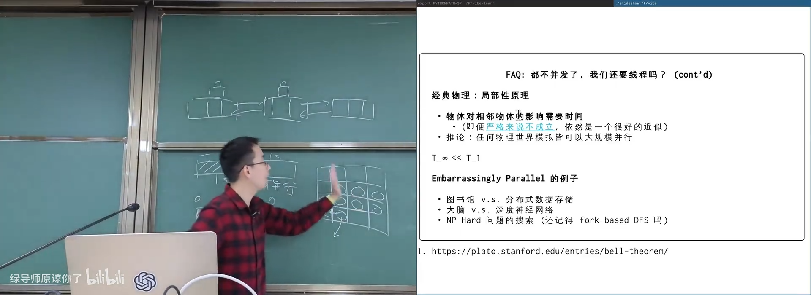
📷 局部性使绝大多数计算天然可并行
回到原视频 (00:36:40)
5. 纯软件互斥：Dekker 与 Peterson
5.1 Dekker 算法
(参考时间: 00:39)
1965 年，Dekker 提出第一个公开正确的两进程互斥算法。
直观描述：
一个进程可以在对方不想进入临界区时进入；否则，只有在轮到它时才能进入。
它的状态空间有限，可以画出完整迁移图，但文字描述像绕口令，直接理解非常困难。
flowchart TD
A["进程 P"] --> B{"对方想进入？"}
B -- "否" --> C["P 可以进入"]
B -- "是" --> D{"轮次属于 P？"}
D -- "是" --> C
D -- "否" --> E["等待"]
E --> B
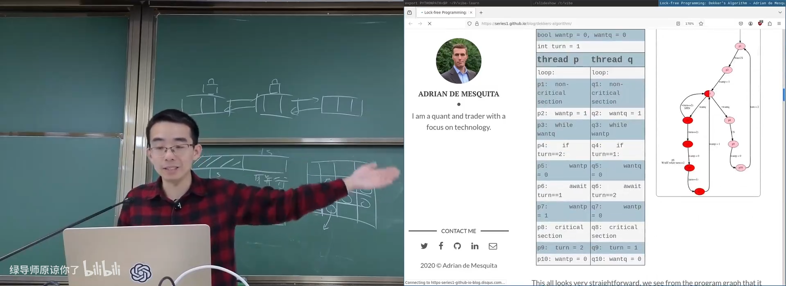
📷 Dekker 算法的状态空间与互斥证明
回到原视频 (00:40:30)
5.2 Peterson 算法：宿舍厕所协议
(参考时间: 00:41)
Peterson 算法用三个变量：
flagA / flagB：两个人是否举手
turn：门上的名字纸条
希望进入临界区：
- 举起自己的旗子；
- 把对方的名字贴到门上；
- 观察对方是否举旗；
- 如果对方没举旗，或者门上是自己的名字，就进入；
- 否则继续观察；
- 离开时放下自己的旗子。
flowchart TD
A["举起自己的 flag"] --> B["turn = 对方"]
B --> C{"对方 flag 未举？"}
C -- "是" --> F["进入临界区"]
C -- "否" --> D{"turn == 自己？"}
D -- "是" --> F
D -- "否" --> E["继续观察"]
E --> C
F --> G["离开：放下自己的 flag"]
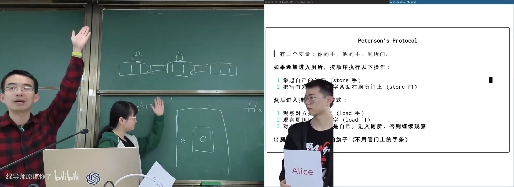
📷 以宿舍单人间比喻 Peterson 协议
回到原视频 (00:42:30)
5.3 两人同时想进入时谁赢
(参考时间: 00:43)
如果 Alice 和 Bob 同时举旗：
- 两人都会把对方名字写到
turn； - 后写的人覆盖先写的人；
- 最终
turn只保留一个名字； - 名字对应的线程进入，另一个等待。
看似谦让，实际上是“手快有、手慢无”的优先级选择。
sequenceDiagram
participant A as Alice
participant X as turn
participant B as Bob
A->>A: flagA = true
B->>B: flagB = true
A->>X: turn = B
B->>X: turn = A
Note over X: 最后一次写决定前一个阶段
B->>B: 观察到 turn == A 进入
A->>A: 观察到 turn == B 等待
5.4 模型检查器
(参考时间: 00:46)
Peter 算法状态有限：
(flagA, flagB, turn, PC1, PC2)
可以在黑板上逐个状态推演，也可以在 Python 中实现状态机和模型检查器：
def step(state, thread):
...
frontier = {initial_state}
while frontier:
state = frontier.pop()
for thread in threads:
next_state = step(state, thread)
check_invariant(next_state)
frontier.add(next_state)
程序可以验证：
- 不会两个线程同时进入临界区；
- 不会出现双方都永久无法进入；
- 修改协议顺序后会触发反例。
flowchart TD
A["初始状态"] --> B["选择线程执行一步"]
B --> C["生成新状态"]
C --> D{"违反互斥或进展性？"}
D -- "是" --> E["输出反例路径"]
D -- "否" --> F{"仍有未探索状态？"}
F -- "是" --> B
F -- "否" --> G["状态空间检查完成"]
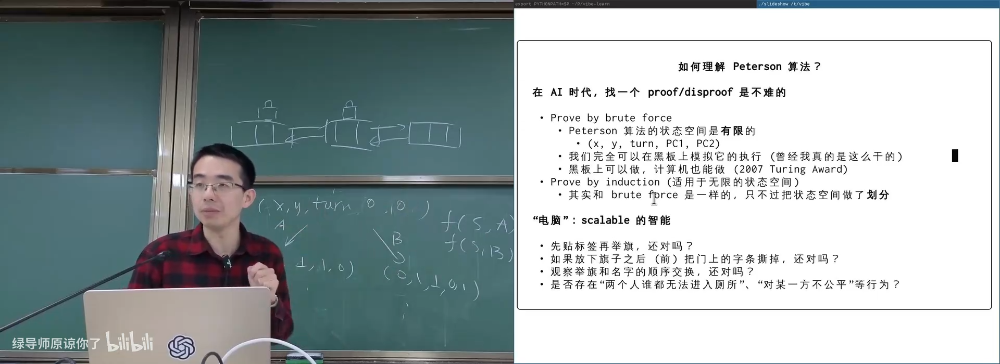
📷 用模型检查器暴力验证 Peterson 协议
回到原视频 (00:49:30)
5.5 修改协议就会出错
(参考时间: 00:49)
可以测试许多变体：
- 先写
turn再举旗，是否正确； - 离开后擦掉
turn，是否正确； - 交换观察顺序，是否正确；
- 是否可能出现双方都进不去；
- 是否对某个线程不公平。
直觉上很小的改动，可能破坏整套协议。
flowchart TD
A["原始 Peterson 协议"] --> B["正确"]
A --> C["交换发起操作顺序"]
A --> D["离开时清空 turn"]
A --> E["交换观察顺序"]
C --> F["模型检查"]
D --> F
E --> F
F --> G["发现死锁 / 同时进入 / 不公平反例"]
5.6 Peterson 的时代假设已经不成立
(参考时间: 00:53)
Peterson 算法证明了：
- 只靠 load/store 也能逻辑上实现两个线程互斥；
- 状态空间可以形式化验证；
- 但互斥证明依赖两个关键假设。
当时的假设：
load/store 瞬间完成并生效
指令按程序顺序执行
现代系统违反了它们：
- 编译器和 CPU 会重排；
- store 可能进入缓冲区后才传播；
- load 可能看到旧缓存；
- 内存屏障需要额外指令；
- C/C++ 数据竞争是 undefined behavior。
flowchart LR
A["Peterson 的逻辑证明"] --> B["假设：顺序一致"]
B --> C["现代编译器重排"]
B --> D["现代 CPU 乱序"]
B --> E["缓存与 store buffer"]
C --> F["需要 compiler barrier"]
D --> G["需要 memory barrier"]
E --> G
F --> H["实现复杂且低效"]
G --> H
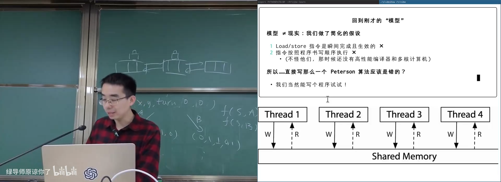
📷 Peterson 算法依赖的顺序一致假设
回到原视频 (00:53:20)
5.7 错误实现为何可能长期看似正确
(参考时间: 00:54)
去掉所有 barrier 后，程序理论上错误，但可能在特定机器上长时间无法复现。
错误运行需要非常窄的窗口：
- 两个线程同时看到内存中的空闲状态；
- store 的传播顺序恰好违反预期；
- 两次进入被原子计数器观察到。
这种“看似通过”是最危险的状态，因为压力测试通过不代表协议正确。
flowchart TD
A["错误 Peterson 实现"] --> B["触发窗口非常窄"]
B --> C["测试 1 万次未复现"]
C --> D["误以为正确"]
D --> E["换机器 / 换编译器 / 换负载"]
E --> F["突然失败"]
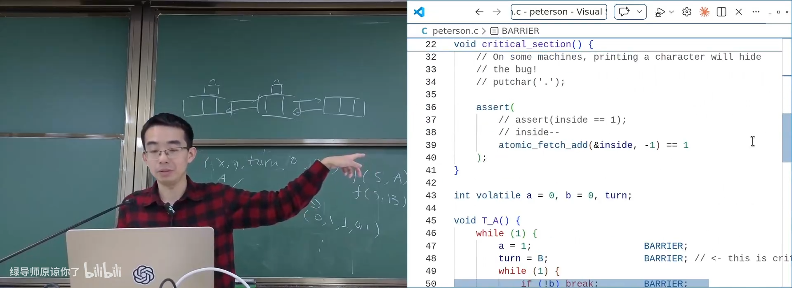
📷 错误 Peterson 实现在某些机器上难以复现
回到原视频 (00:55:00)
5.8 两线程限制与“智力体操”
(参考时间: 00:57)
Peterson 只适用于已知的两个线程：
- 需要知道“对方是谁”；
- 动态创建和退出的线程数量使协议不再直接适用；
- 扩展到多线程更多是智力体操。
课程真正需要的是绝对正确、可工程化的机制。
flowchart TD
A["Peterson 两线程协议"] --> B["需要固定对手身份"]
B --> C["动态产生 100 个线程"]
C --> D["协议无法直接适用"]
D --> E["需要硬件与操作系统帮助"]
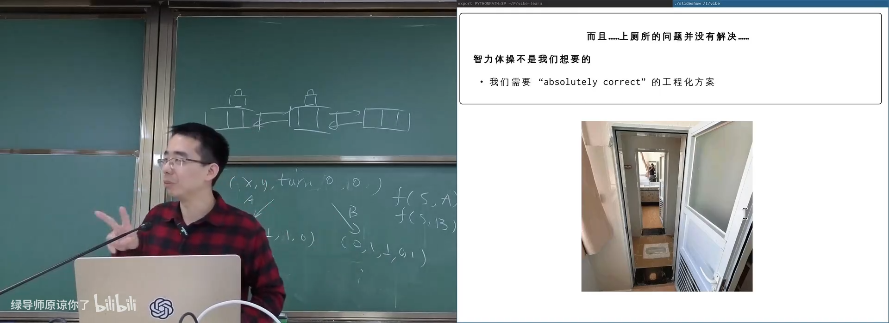
📷 Peterson 算法只覆盖固定的两个线程
回到原视频 (00:57:20)
6. 原子指令：把 load + store 变成不可分割操作
6.1 错误锁的问题
(参考时间: 01:00)
一个朴素的锁：
void lock(void) {
retry:
if (table[key] == FREE) {
table[key] = TAKEN;
return;
}
goto retry;
}
void unlock(void) {
table[key] = FREE;
}
问题与并发支付完全相同：
- 线程看到
FREE； - 还没写
TAKEN时被切换； - 另一个线程也看到
FREE； - 两个线程都拿走钥匙。
需要将“检查并拿走”变成一个不可分割操作。
flowchart TD
A["T1 load: FREE"] --> B["T2 load: FREE"]
B --> C["T1 判断可获取"]
C --> D["T2 判断可获取"]
D --> E["T1 store TAKEN"]
E --> F["T2 store TAKEN"]
F --> G["双方都认为自己获得锁"]
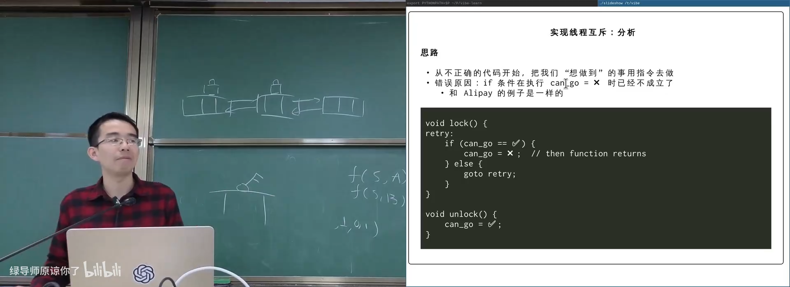
📷 朴素锁在检查与拿走之间产生竞态
回到原视频 (01:00:40)
6.2 原子交换与 Compare-and-Swap
(参考时间: 01:03)
硬件提供两种典型原语：
Atomic exchange
old = atomic_exchange(&lock, TAKEN);
if (old == FREE) {
/* acquired */
}
Compare-and-swap
int expected = FREE;
if (atomic_compare_exchange(&lock, &expected, TAKEN)) {
/* acquired */
}
CAS 只有在当前值等于 expected 时才写入：
- 成功：完成比较和交换；
- 失败：返回当前值，通常不写入；
- 整个过程对系统其他处理器表现为原子。
flowchart TD
A["CAS(lock, expected=FREE, desired=TAKEN)"] --> B{"lock == FREE？"}
B -- "是" --> C["lock = TAKEN"]
C --> D["返回成功"]
B -- "否" --> E["返回失败和当前值"]
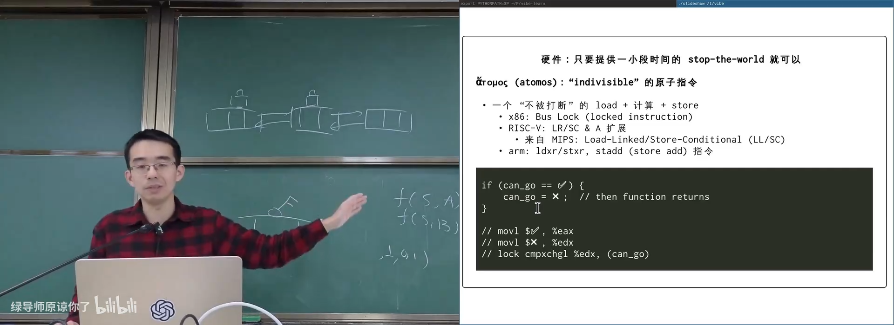
📷 x86 `lock cmpxchg` 实现原子比较交换
回到原视频 (01:04:00)
6.3 硬件如何提供原子性
不同体系结构有不同方法：
- x86：
lock前缀、总线锁或缓存锁、lock cmpxchg； - ARM：
ldxr/stxr、原子算术扩展； - RISC-V：LR / SC；
- C/C++：
atomic_compare_exchange_*、atomic_exchange_*。
flowchart TD
A["需要原子读改写"] --> B["x86: locked instruction"]
A --> C["ARM: exclusive load/store"]
A --> D["RISC-V: LR / SC"]
A --> E["C/C++ 原子库"]
B --> F["编译器生成平台指令"]
C --> F
D --> F
E --> F
7. 自旋锁：正确但有性能问题
7.1 自旋锁实现
(参考时间: 01:06)
void spin_lock(spinlock_t *lk) {
int expected = FREE;
while (!atomic_compare_exchange_weak(&lk->value,
&expected, TAKEN)) {
expected = FREE;
}
atomic_thread_fence(memory_order_acquire);
}
void spin_unlock(spinlock_t *lk) {
atomic_thread_fence(memory_order_release);
atomic_store(&lk->value, FREE);
}
自旋锁与 mutex 的使用方法相同，但失败线程不会睡眠，而是在 CPU 上不断重试。
flowchart TD
A["spin_lock"] --> B["CAS FREE → TAKEN"]
B --> C{"成功？"}
C -- "是" --> D["获得锁"]
C -- "否" --> E["重置 expected"]
E --> B
D --> F["critical section"]
F --> G["release fence"]
G --> H["store FREE"]
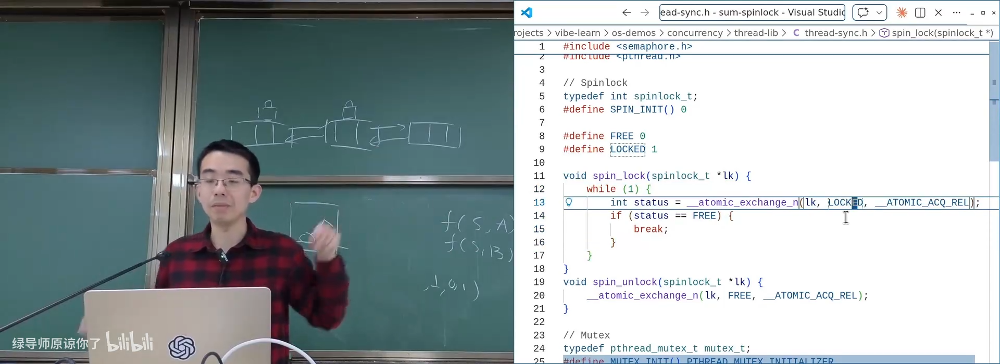
📷 用原子交换实现自旋锁
回到原视频 (01:07:20)
7.2 “一核有难，八核围观”
(参考时间: 01:08)
只有获得锁的线程能推进，其他线程在 CPU 上空转：
- 消耗核心；
- 产生大量缓存一致性流量；
- 不执行有效计算；
- 如果临界区较长，浪费尤其严重。
flowchart LR
A["CPU 0：持锁执行"] --> C["共享锁缓存行"]
B1["CPU 1：CAS 自旋"] --> C
B2["CPU 2：CAS 自旋"] --> C
B3["CPU 3：CAS 自旋"] --> C
C --> D["大量无效流量与空转"]
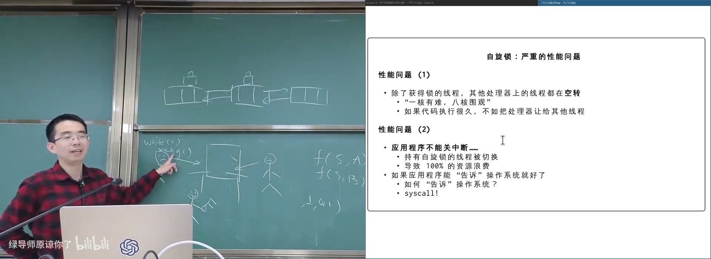
📷 一个线程持锁时其他处理器持续自旋
回到原视频 (01:08:40)
7.3 持锁线程被调度出去
(参考时间: 01:09)
更严重的问题：
- 线程 A 获得自旋锁；
- 时间片到期，A 被操作系统切换出去；
- 同一 CPU 上运行线程 B；
- B 尝试获取锁，开始自旋；
- A 得不到 CPU，无法释放锁；
- 全部计算资源都被浪费。
用户态程序不能关闭中断，无法阻止自己被调度，也无法直接告诉内核“我在等这把锁”。
flowchart TD
A["T1 获得锁"] --> B["T1 被操作系统抢占"]
B --> C["T2 在同一 CPU 运行"]
C --> D["T2 自旋等待锁"]
D --> E["T1 无法运行"]
E --> F["T1 无法释放锁"]
F --> D
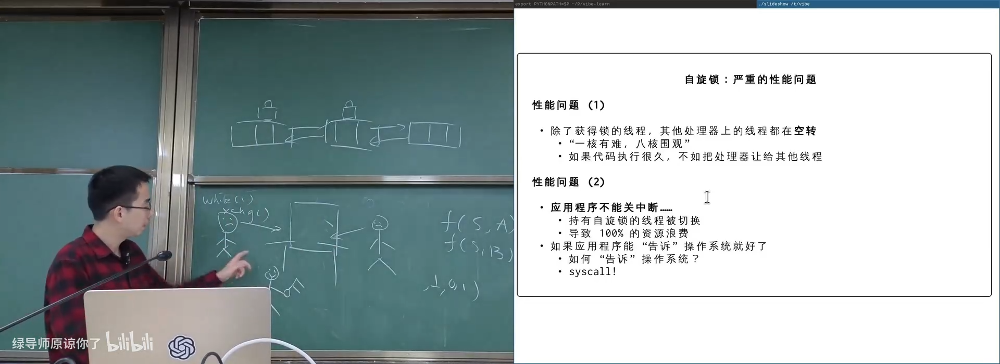
📷 持锁线程被换出后，自旋线程无法取得进展
回到原视频 (01:10:20)
8. 内核协助与 futex
8.1 把锁的实现交给操作系统
(参考时间: 01:11)
理想接口：
syscall(SYSCALL_acquire, &lock);
syscall(SYSCALL_release, &lock);
- acquire 成功：返回用户态；
- acquire 失败：内核把线程设为阻塞；
- release：内核唤醒等待该锁的线程；
- 内核内部可以用关中断和短自旋锁保护自己的数据结构。
flowchart TD
A["用户线程 acquire"] --> B["进入内核"]
B --> C{"锁空闲？"}
C -- "是" --> D["获得锁，返回用户态"]
C -- "否" --> E["标记等待该锁"]
E --> F["线程睡眠，调度别的线程"]
G["持锁线程 release"] --> H["进入内核"]
H --> I["唤醒等待者"]
I --> J["被唤醒线程重新竞争锁"]
8.2 futex：Fast Userspace Mutex
(参考时间: 01:12)
Linux 没有为每个等待都无条件执行两个系统调用，而是使用 futex：
- Fast path：无竞争时完全在用户态原子操作，不进入内核；
- Slow path：发生竞争时执行 futex 系统调用，让等待线程睡眠；
- 内核只在确实需要睡眠或唤醒时介入。
概念上的状态：
FREE
LOCKED_NO_WAITERS
LOCKED_WITH_WAITERS
flowchart TD
A["futex_lock"] --> B["原子 CAS FREE → LOCKED"]
B --> C{"成功？"}
C -- "是" --> D["Fast path：直接进入临界区"]
C -- "否" --> E["设置 WAITERS 标志"]
E --> F["FUTEX_WAIT 睡眠"]
G["futex_unlock"] --> H{"有 WAITERS？"}
H -- "否" --> I["直接 store FREE"]
H -- "是" --> J["FUTEX_WAKE"]
J --> K["唤醒等待者"]
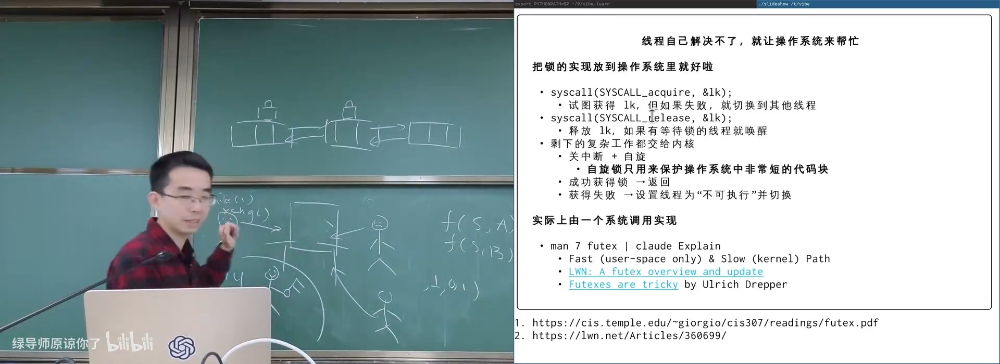
📷 futex 的用户态快路径与内核慢路径
回到原视频 (01:12:40)
8.3 “Futexes are tricky”
(参考时间: 01:13)
futex 的难点在于：
- 用户态和内核态共享一个整数的状态；
- acquire 与 release 都可能需要避免不必要的系统调用；
- 等待者可能在状态变化窗口内重新睡眠；
- 唤醒、丢失唤醒和虚假唤醒都要正确处理；
- 不同内存序与原子状态转换必须匹配。
这类代码极为微妙，连有经验的系统开发者也可能第一次写错。
flowchart TD
A["futex 状态"] --> B["用户态原子操作"]
A --> C["内核等待队列"]
B --> D["状态变化"]
D --> E["FUTEX_WAIT / FUTEX_WAKE"]
E --> F["缺少状态检查可能丢唤醒"]
E --> G["检查与睡眠之间必须原子化"]
G --> H["Futexes are tricky"]
9. 定量比较不同互斥实现
9.1 控制变量实验
(参考时间: 01:15)
比较三种实现：
- 原子指令直接
sum++； - mutex；
- 自旋锁；
- 每次都进入内核的 naive futex。
控制变量：
总 sum++ 次数固定
线程数 T = 1, 2, 4, 8, 16
每种配置重复 5 次
记录每次操作的纳秒数和每秒操作数
flowchart TD
A["固定总 sum++ 次数"] --> B["分配线程 1 / 2 / 4 / 8 / 16"]
B --> C["运行 atomic / mutex / spin / futex"]
C --> D["每种组合重复 5 次"]
D --> E["记录原始 CSV"]
E --> F["计算平均值与误差"]
F --> G["生成带 error bar 的图"]
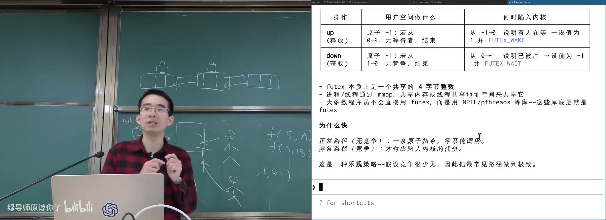
📷 对比原子指令、mutex、自旋锁和 futex 的实验代码
回到原视频 (01:15:00)
9.2 单线程与系统调用成本
(参考时间: 01:18)
单线程最快，因为没有原子竞争和锁等待。但在不同实现之间：
- 普通原子指令只增加少量开销；
- mutex 无竞争时主要在用户态快速完成；
- 自旋锁在无竞争时也很快；
- 每次都进入内核的 futex 慢几百纳秒。
flowchart LR
A["单线程 sum++"] --> B["最快基线"]
B --> C["atomic：少量额外开销"]
B --> D["uncontended mutex：用户态 fast path"]
B --> E["spinlock：原子交换"]
B --> F["forced futex syscall：数百 ns 内核成本"]
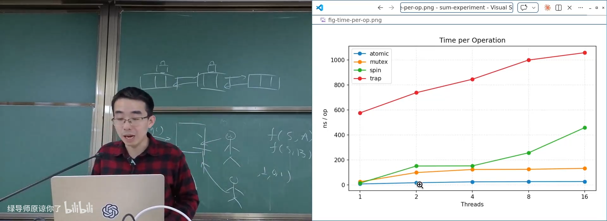
📷 每次 sum++ 平均时间的实验结果
回到原视频 (01:20:40)
9.3 扩展性
(参考时间: 01:20)
线程数超过 CPU 数量后：
- mutex 可以让等待者睡眠，平台扩展性明显优于自旋锁；
- 自旋锁因线程被抢占而急剧变差；
- 原子指令在低竞争时最快，但高竞争仍有缓存流量问题；
- 强制每次
futex系统调用的版本始终受内核切换成本限制。
flowchart TD
A["线程数 ≤ CPU 数"] --> B["自旋锁表现尚可"]
C["线程数 > CPU 数"] --> D["持锁线程被抢占概率增加"]
D --> E["自旋线程浪费 CPU"]
E --> F["spinlock 扩展性急剧下降"]
C --> G["mutex 将等待者睡眠"]
G --> H["扩展性更稳定"]
9.4 Benchmarking Crimes
(参考时间: 01:22)
课程要求先阅读：
常见错误：
- selective data：只展示有利数据；
- 隐藏缺陷：只在有利配置下测试；
- 混淆启动、编译和运行时间；
- 不做重复实验；
- 不报告误差和原始数据；
- 用不可复现的环境比较；
- cherry-picking 最好的一次结果。
系统研究需要：
- 明确控制变量；
- 保存原始数据；
- 多次重复；
- 报告分布与误差；
- 让实验可复现。
flowchart TD
A["Benchmarking Crime"] --> B["精选数据"]
A --> C["隐藏不利结果"]
A --> D["不重复实验"]
A --> E["隐藏环境差异"]
A --> F["只报告最好一次"]
B --> G["错误结论"]
C --> G
D --> G
E --> G
F --> G
G --> H["可复现实验与原始数据"]
H --> I["可信性能结论"]
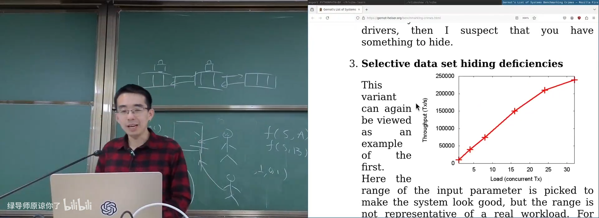
📷 Systems Benchmarking Crimes 的反面案例
回到原视频 (01:23:10)
10. 总结：互斥让复杂并发退回顺序世界
这一讲从未解决的 sum++ 出发，逐步建立完整路线：
- 操作系统系统调用是共享内核状态上的多线程程序；
- 单处理器内核可以用关中断实现极短互斥；
- 用户态无权关中断；
- mutex 通过
lock/unlock定义临界区； - acquire / release 同时提供互斥与内存可见性；
- 锁的求值、配对所有路径、多把锁和细粒度结构都很难；
- 工程上先从一把大锁保证正确，再逐步优化；
- Amdahl 与 Gustafson 说明串行部分必须足够小；
- 局部性和 embarrassingly parallel 任务仍然可以大规模并行；
- Peterson 用纯 load/store 实现两线程互斥，但依赖顺序一致；
- 模型检查可以穷举有限状态并验证协议；
- 原子 CAS / exchange 提供硬件级不可分割读改写；
- 自旋锁正确但空转，且会因持锁线程被抢占而灾难性退化；
- futex 用用户态快路径和内核慢路径实现可睡眠 mutex；
- 定量实验可以帮助理解不同实现的成本与扩展性。
flowchart LR
A["共享内存并发"] --> B["定义临界区"]
B --> C["互斥 API"]
C --> D["Peterson / 纯软件尝试"]
D --> E["原子指令"]
E --> F["自旋锁"]
F --> G["内核协助 / futex"]
G --> H["可扩展、可睡眠的互斥"]
最终的核心思想是：
互斥不消灭多线程，而是把必须串行的一小部分明确隔离出来，让其余绝大部分代码继续安全并行。
从下一讲开始，互斥将扩展为条件同步、信号量、读写锁以及更复杂的并发控制原语。
附：官方参考与延伸阅读
以下链接来自官方讲义第 14 讲及课堂内容：
- 尝试关闭中断 demo
- Mutex API 求和
- Peterson paper, Myths about the mutual exclusion problem
- Moore 状态机检查器
- Peterson 算法 demo
- Spinlock 求和
futex(7)- LWN: A futex overview and update
- Futexes Are Tricky
- 不同方式的并发求和实验
- Systems Benchmarking Crimes
阅读材料：
- Operating Systems: Three Easy Pieces 第 29 章，Locked Data Structures。
官方课程资料：
版权与署名：本讲课程材料由蒋炎岩（jyy）编写。课程讲义与幻灯片采用 Creative Commons BY-NC 4.0 许可；本电子书保留课程出处、作者署名与许可说明。